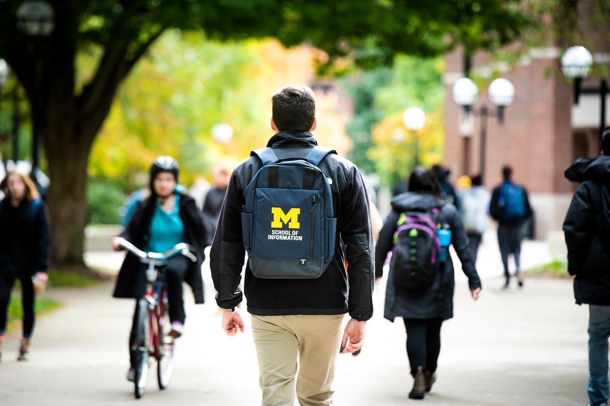
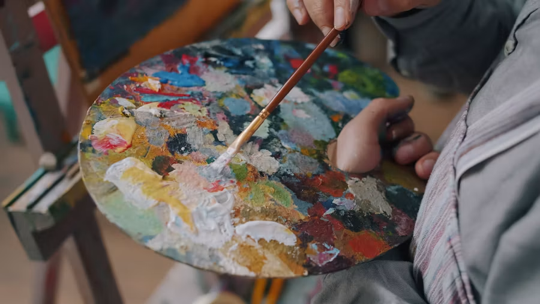

Communicate with Your Partner
Write a clear introductory message, identify the main contacts, and agree on communication channels and response times.

First impressions shape a partnership. Early conversations turn a project idea into a clear professional commitment and give both the team and the partner a shared understanding of the work.

Use the beginning of the experience to create trust, clarify expectations, and plan how the team will communicate and make decisions.
Write a clear introductory message, identify the main contacts, and agree on communication channels and response times.
Record the project scope and team commitments so everyone can refer to the same expectations as the work develops.
